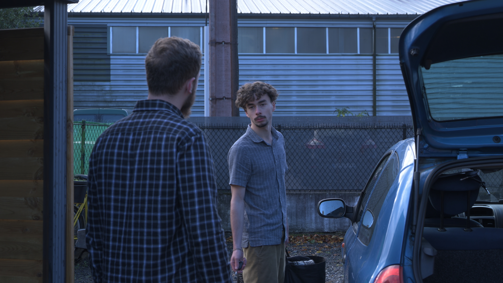
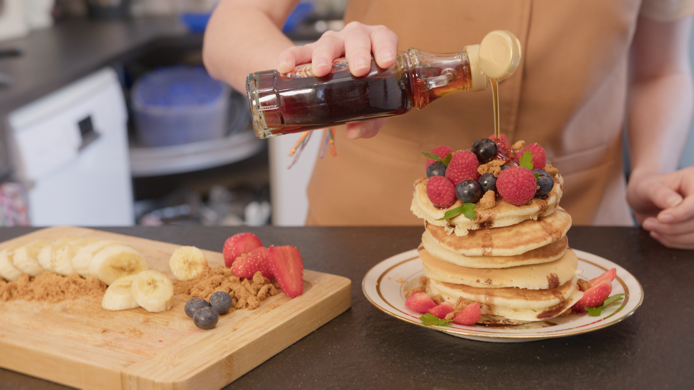

Before / After Grading
Comparaison de mes étalonnages vidéo






Colorist / Étalonnage Vidéo
Comparaison de mes étalonnages vidéo


Je suis étalonneur vidéo spécialisé dans la création de look et d'émotions.
J'aide les réalisateurs, marques et créateurs à donner une identité visuelle forte à leurs images. Mon travail se concentre sur la lumière, le contraste et la cohérence des couleurs afin de créer une ambiance unique et narrative.
Chaque projet est traité avec une approche sur mesure, inspirée du cinéma et des standards des productions modernes.
Je suis disponible pour des projets de colorimétrie, publicité, clip ou court-métrage.
Mon objectif est de donner une identité visuelle forte et cohérente à vos images.
📍 France
🎬 Étalonneur / Coloriste
⚡ Réponse rapide